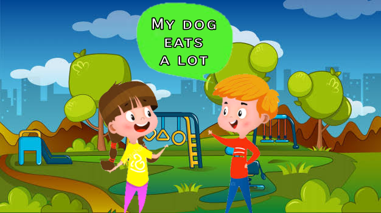
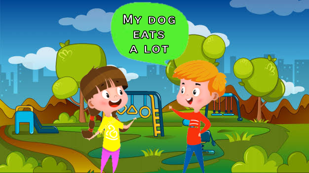
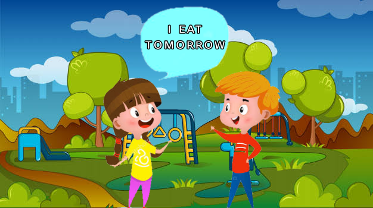
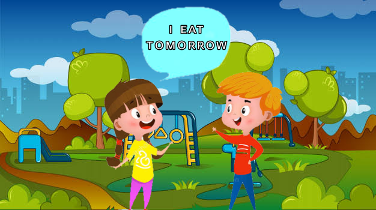

The present simple is a tense of the present that is used to talk about things that usually happen in our life or about others (true facts).


But it also helps to express future through phrases.


The personal pronouns
Personal pronouns are divided because for third persons the "S" rule applies.
Rule of the "S"
It applies only to third persons and only applies when speaking positively
- The rule has three endings:
- es, is, s
It applies only to third persons and only applies when speaking positively
- The rule has three endings:
- es, is, s
Rule "es":
The rule applies when the action verb ends in:
- ch, sh, ss, x, o
The rule applies when the action verb ends in:
- ch, sh, ss, x, o
Rule "ies":
The rule applies when the action verb ends in:
- consonat + y
Change the "y" for an "i" and then add the ending "es"
The rule applies when the action verb ends in:
- consonat + y
Change the "y" for an "i" and then add the ending "es"
Rule "s":
The 's' rule applies when the action verb does not apply the previous rules
The 's' rule applies when the action verb does not apply the previous rules
Structure of sentences in a positive way
Subject + Verb in simple form + complement
Subject + Verb in simple form + complement
Auxiliary of the negative and interrogative form
For the negative and interrogative form an auxiliary is used that serves for both forms.
For the negative and interrogative form an auxiliary is used that serves for both forms.
The "does" is "do" but the rule of the "s" applies.
Sentence structure in negative form
Subject + Auxiliary + not + verb in its simple form + complement
In the negative form of the sentence the auxiliary and the "not" can be contract
Subject + Auxiliary + not + verb in its simple form + complement
In the negative form of the sentence the auxiliary and the "not" can be contract
Sentence structure in interrogative form
Auxiliary + Subject + verb in its simple form + complement + ?
Execises to Practice:
Click here
Auxiliary + Subject + verb in its simple form + complement + ?
Click here